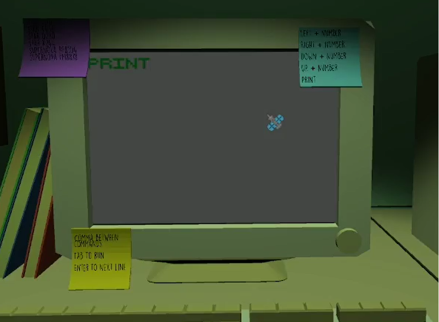

Satellitando

História do jogo
O jogo se trata de um estagiario da NASA que por acidente apagou todas as fotos que um satelite havia tirado
Para tentar corrigir o erro voce deve tirar todas as fotos novamente
Jogabilidade
Use comandos que aparecem no canto do monitor para mover o satelite e poder tirar as fotos
- Amandinha
- Felipe Barros
- Lucas Peixoto
- Uriel Duarte
- William Fabiano